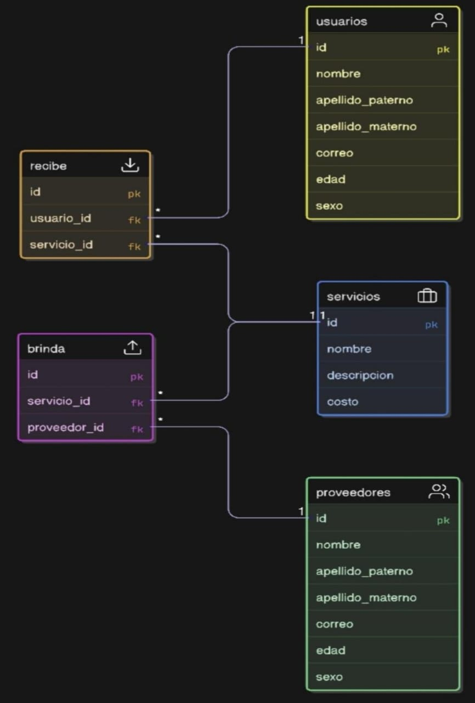
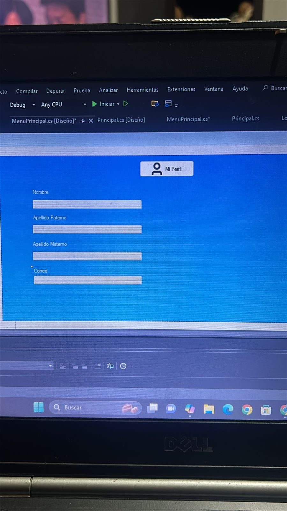

Esta fue la primera versión de nuestra aplicación Skillshare, desarrollada en C# con conexión a MySQL Workbench. Aunque algunos módulos no quedaron completamente conectados, muestra el avance inicial de la idea: una plataforma para crear y solicitar servicios dentro de nuestra carrera de TI - Desarrollo de Software Multiplataforma.
La aplicación permitía registrar servicios, mostrar su descripción, solicitar el servicio deseado y definir su costo. Toda esta información se almacenaba en una base de datos MySQL.

